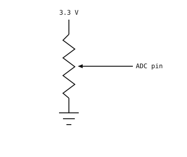

6.12. Reading analog with the ADC¶
So far the camera has been reading digital signals – a pin is
either 0 or 1, a switch is open or closed. Most signals
that come off real-world sensors are analog: a continuous
voltage that varies smoothly over some range. A photoresistor
sweeps through every voltage between the rails as ambient
brightness changes. A temperature sensor’s output drifts a few
millivolts as a room heats up. A microphone’s output rises and
falls with the sound around it.
An analog-to-digital converter (ADC) is the bridge. It samples the voltage on a pin and returns an integer that Python can read like any other value.
6.12.1. Quantization¶
A digital value cannot represent a continuous voltage exactly.
The ADC’s job is to quantize – snap each sample to the
nearest of a fixed set of levels. An N-bit ADC has
2^N levels; a 12-bit converter has 4096 of them spread
across its input range.

Quantization: each sample of the analog signal (solid) is rounded to one of a finite set of digital levels (stepped dashed line).¶
The voltage between two adjacent levels is the step size of
the ADC; anything smaller than that vanishes into rounding. A
12-bit ADC over a 3.3 V range has a step size of about
3.3 / 4096 ≈ 0.8 mV – fine enough that most signals look
effectively continuous in software.
6.12.2. The machine.ADC class¶
machine.ADC wraps one analog input channel. Construct
it with the pin you want to read, then call
read_u16():
from machine import ADC
adc = ADC("P6")
value = adc.read_u16()
print(value)
read_u16() always returns an unsigned
16-bit integer between 0 and 65535. The native ADC
resolution varies by board (12-bit on STM32, port-specific
elsewhere); the result is left-aligned into 16 bits so the
hardware detail does not leak into Python – a value of
65535 is full-scale regardless of the chip.
The reference voltage – the input that corresponds to full-scale – depends on the board. Check the OpenMV Boards for the value on your cam. Anything above the reference reads as full-scale (and may damage the pin if it exceeds the absolute-maximum input voltage).
6.12.2.1. Converting counts to voltage¶
The mapping from counts to voltage is linear, with full-scale
counts mapping exactly to Vref:
voltage = counts × Vref / 65535
In code:
VREF = 3.3 # cam-dependent; see the quickref
counts = adc.read_u16()
voltage = counts * VREF / 65535
print(voltage, "V")
6.12.3. Voltage dividers¶
Two resistors in series between a voltage rail and ground form a voltage divider. The node between them sits at a voltage set by the ratio of the two resistors:

A voltage divider: R1 and R2 in series scale Vin
down to V_out.¶
V_out = Vin × R2 / (R1 + R2)
Equal resistors give half the rail voltage; R2 much
smaller than R1 puts the tap close to ground; R2 much
larger puts it close to the rail.
The formula assumes nothing else draws appreciable current
from V_out. An ADC pin is high-impedance (megohms,
nanoamps) and easily satisfies that, so a divider feeding an
ADC behaves as the formula predicts.
6.12.4. Potentiometers¶
A potentiometer is a single physical component that is
exactly a voltage divider, with a sliding wiper that moves the
tap between the two ends. Turning the knob changes
R1 and R2 together while keeping their sum (the total
resistance of the pot) constant.

A potentiometer wired as a manual voltage source for the ADC: 3.3 V on one end, ground on the other, wiper to the pin.¶
A pot is the canonical input device for trying out the ADC.
Wire one end to 3.3 V, the other to ground, and the wiper
to an ADC-capable pin; turning the knob sweeps the wiper
through every voltage between the rails.
import time
from machine import ADC
pot = ADC("P6")
VREF = 3.3
while True:
counts = pot.read_u16()
voltage = counts * VREF / 65535
print(voltage, "V")
time.sleep_ms(100)
6.12.5. Reading higher voltages with a divider¶
A voltage above Vref will pin the ADC at full-scale and may
damage the input if it exceeds the absolute-maximum rating. To
read a higher source – a battery, a sensor output that ranges
beyond Vref – scale it down with a fixed voltage divider
before it reaches the pin:

Scaling a high-voltage source to fit the ADC: R1 and
R2 form a fixed voltage divider whose tap feeds the
ADC pin.¶
Pick R1 and R2 so the divided voltage stays inside the
ADC’s range at the highest input voltage you expect:
V_adc = V_in × R2 / (R1 + R2)
For a maximum V_in = 12 V and a 3.3 V reference, the ratio
R2 / (R1 + R2) must be at most 3.3 / 12 ≈ 0.275. A
common pick with a little headroom is R1 = 33 kΩ,
R2 = 10 kΩ. The ratio is 10 / 43 ≈ 0.233, so
V_adc tops out at about 12 × 0.233 ≈ 2.79 V – safely
below Vref.
To recover the original V_in from an ADC reading, invert
the divider formula:
V_in = V_adc × (R1 + R2) / R2
In code:
from machine import ADC
R1 = 33_000
R2 = 10_000
VREF = 3.3
adc = ADC("P6")
counts = adc.read_u16()
v_adc = counts * VREF / 65535
v_in = v_adc * (R1 + R2) / R2
print(v_in, "V")
A few practical notes:
The divider draws
V_in / (R1 + R2)continuously. WithR1 + R2 = 43 kΩandV_in = 12 V, that is about 280 µA – usually negligible, but if the source is battery-powered consider larger resistors (100 kΩ to 1 MΩ) to cut idle drain.Resistor tolerance (typically ±1 % or ±5 %) feeds directly into measurement accuracy. Two ±5 % resistors can give the recovered
V_ina worst-case error of roughly ±10 %.The divider’s source impedance combines with any stray capacitance to low-pass-filter the input. For fast-changing signals that matters; for a battery-voltage check it does not.